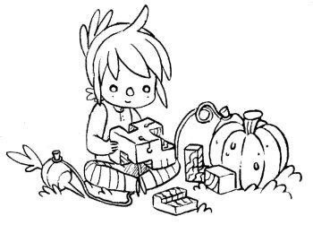

mission

We founded Hundred Rabbits so we could dedicate our time to the creation of small, playful, free, open-source software, while considering the impact of our works on the environment, and optimizing toward living more sustainably. We've adapted our software and projects around the limitations of our vessel instead of increasing its limits. We learned to appreciate these limits and think that they make our work better.
The benefits of many modern technologies today are illusory, and undermine people's self-sufficiency, freedom, and dignity. Ivan Illich proposed the concept of "convivial tools" that honor human agency and creativity. Convivial tools are not proprietary, in the style of many software today, but open-ended, flexible instruments that serve the needs and interests of ordinary individuals and communities.
We want our work to be an equal blend of aesthetics, playfulness, and practicality. We aim to keep our software small, portable and build from first principles to keep them participatory.